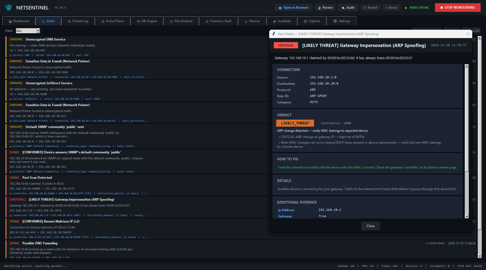
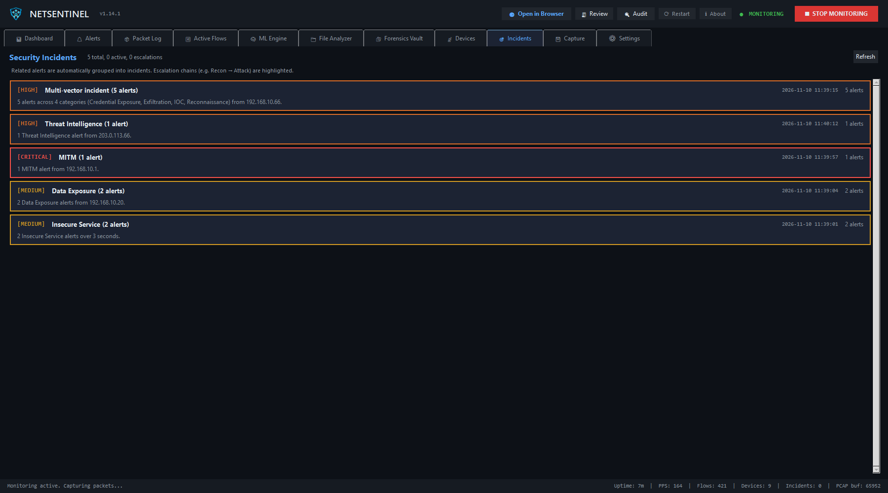
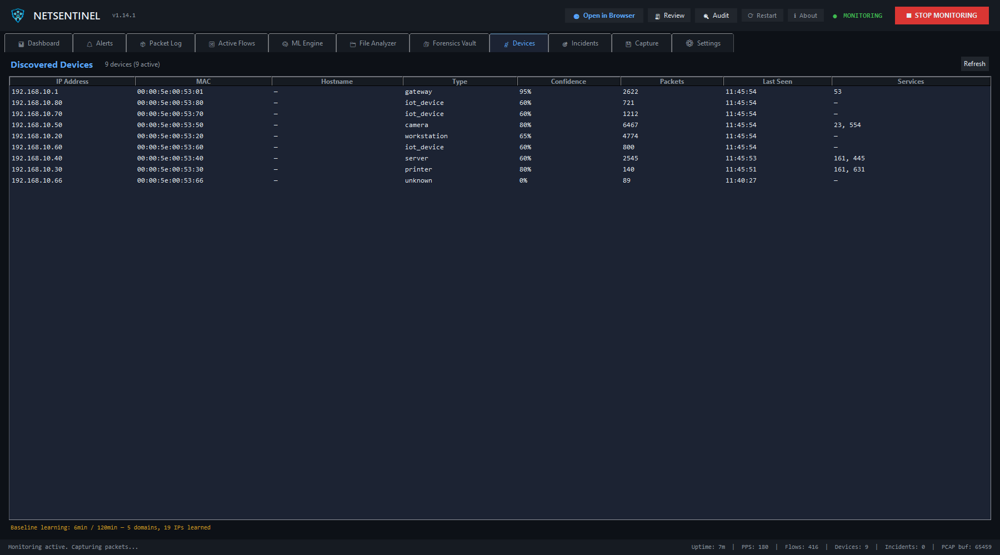
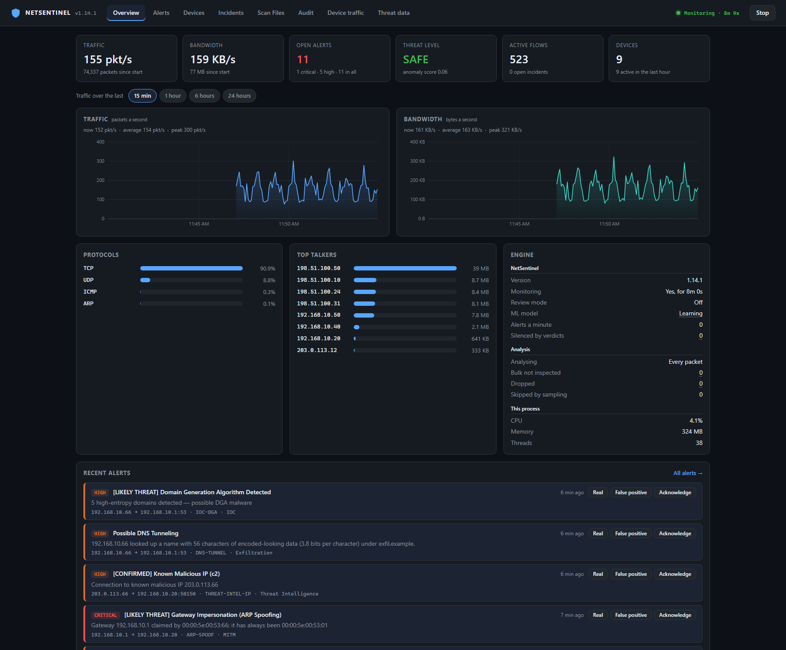

What it watches for
Beaconing
Traffic that keeps a schedule, even with the jitter C2 frameworks add.
Attacks
Port scans, brute force, SYN and ICMP floods.
DNS abuse
Tunnelling, domain-generation bursts and fast-flux hosting.
LAN threats
ARP spoofing, rogue DHCP and router adverts, LLMNR poisoning, lateral movement.
Data leaving
Uploads far above a host's baseline.
Known-bad hosts
Botnet C2s, malware URLs and attackers from public threat lists.
Insecure services
Unencrypted SMB and printing, default SNMP communities, credentials sent in plaintext.
The unusual
Anything far from the baseline it learned for your network.
See what's on your network, and what it's doing
Traffic, flows and processes
Full packet capture with live bandwidth charts, protocol breakdown, two-way flow tracking and the process behind each connection.
Inside encrypted connections
The TLS handshake gives the destination's name (SNI), even when DNS goes over HTTPS, and a JA3/JA4 fingerprint of the client software, so malware with its own TLS stack stands out.
Learns your network
For the first hours it records what's normal here: destinations, ports, schedules. Then an Isolation Forest flags what's far from that. Learning stops when the window closes, so nothing an attacker does later can whitelist itself.
Incidents, not alert floods
Related alerts are grouped into incidents, and escalation chains such as reconnaissance then attack, or a threat-list hit then exfiltration, read as one story.
Evidence you can open
A ring buffer of raw packets: save the last five minutes on demand, or record continuously. Serious alerts keep the traffic that raised them, narrowed to the hosts involved, ready for Wireshark.
Every device, passively
Devices on your network are found and classified from ARP, DHCP, mDNS and their traffic, with their vendor. With a UniFi console it uses your own device names, and software versions they announce are checked against CISA's list of exploited vulnerabilities.
A browser dashboard, or headless
A dashboard at 127.0.0.1:8737 shows traffic, alerts with their evidence, devices and incidents. --headless runs the same engine with no window, as a sensor on a server or a Raspberry Pi on a mirror port.
Network audit, when you ask
Off until you turn it on: finds the devices on your own networks, checks 83 common ports at a limited rate, reads TLS certificates and shows what changed. A gentle mode for building and industrial controllers. It never tries a password.
Scan files for leaks
Drop logs, configs, documents, zips or packet captures on the dashboard: every address, domain and URL in them, anything on the threat lists, and any password, key or card number that looks leaked, masked.
A closer look




127.0.0.1:8737, which --headless serves too: mark an alert real or a false positive right there.All pictures are NetSentinel 1.14.1 on made-up traffic: a demo network with documentation addresses and example names. The alerts are its real detectors' output on that traffic.
Private by design
Analysed here
Threat lists (abuse.ch, Spamhaus, Emerging Threats, CISA KEV and more) are downloaded whole and matched on your machine. Nothing about your traffic is sent out.
Careful with what it finds
Credentials seen in plaintext protocols are stored masked by default, in an encrypted vault you can lock with your own passphrase, or not scanned for at all.
A dashboard only you can drive
The dashboard binds to localhost by default, refuses requests for other host names, and its controls need a token only the page carries.
Updates you can trust
It checks GitHub once a day, sending only its version. An update installs on your click, and only if the release carries the Ed25519 signature built into NetSentinel and the download matches its signed hash.
Install
Windows
- Install Npcap, ticking WinPcap API-compatible mode.
- Download NetSentinel.exe and run it. It asks for Administrator, which packet capture needs.
- Click Start monitoring. It learns your network for two hours, then anomaly detection turns on by itself.
NetSentinel.exe isn't code-signed yet, so Windows may show Windows protected your PC: More info → Run anyway. Each release lists its SHA-256 in NetSentinel.exe.sha256.
Scoop
scoop bucket add jamesccupps https://github.com/jamesccupps/scoop-bucket, then scoop install jamesccupps/netsentinel. Scoop doesn't install Npcap, and NetSentinel still asks for Administrator. Your data stays in %USERPROFILE%\.netsentinel.
From source, or as a sensor
Python 3.10 or newer: clone the repository, pip install -r requirements.txt, then python main.py, or python main.py --headless for the dashboard with no window. See the README.
A desktop mostly sees its own traffic. To watch traffic between other machines, run it on a mirror (SPAN) port. The scope limits say what each detector can and can't see.
Feedback
Found a bug or have an idea? Open an issue on GitHub. Security problems go privately: see SECURITY.md.